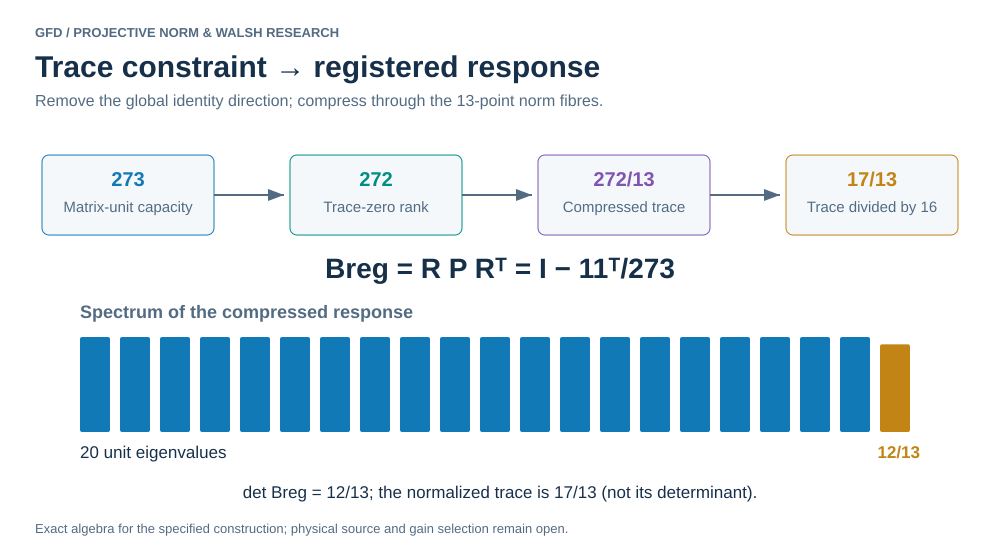

GFD / Field Origin / Explorer 10
Projective norm and inverse Walsh reconstruction
Explore the exact 64-address construction, three spectral grades, 273-point projective ledger and alternating shears. All calculations run offline. Physical gain and gravitational source selection are hypotheses, not proven here.
1. Orthogonal projective plane modes
Select one of the 21 projective Walsh orbits. Its three characters add to +3 on a 16-cell plane and −1 elsewhere.
Input mode
Filtered mode
2. Forward H → diagonal bridge → inverse H
The example ledger is the common scalar 2 plus three plane modes, one per grade. The normalized Walsh transform is applied explicitly to its 64 entries.
Input truth table
Reconstructed truth table
3. Baer partition and norm fibres
Each row is an actual Baer subplane, each column a norm fibre. Select a cell to inspect its original same-grade matrix-unit pair. Select a fibre heading to highlight its 13 preimages.
Gold is the diagonal Baer transversal; the other rows are multiplicative translates. The projective norm is not asserted to preserve projective incidence.
4. Compress the trace constraint

The polynomial is (1 + ε/16)²⁰(1 + 12ε/208); the actual F includes the current squared determinant. The finest-grade normalization is a candidate physical prescription.
5. Alternating shear generator
The angle is free. Setting it to match α demonstrates a conditional model, not a derivation of α.